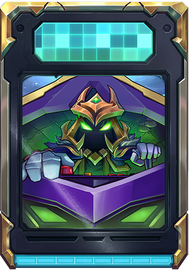

{{ valorSiguiente }}
{{ valorSiguiente }}
Se te asignará una carta al principio del juego.
Tu tarea es adivinar si la siguiente carta es mayor o menor.
Por cada acierto ganarás un (1) punto.
El juego se acaba cuando te equivoques.
Comenzá y lográ la mayor cantidad de puntos ¡Mucha suerte!